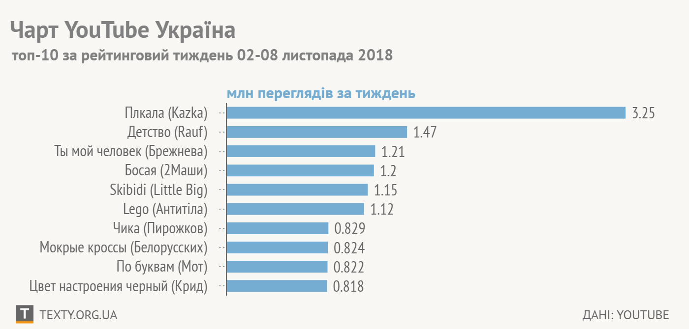

Причиною 78% викидів речовин-забрудників у повітря в Києві в 2015 році були автомобілі. Лише
6% - усі інші види транспорту разом.
Існують затребувані професії, для яких в Україні пропонована середня зарплатня перевищує ту,
яку просять здобувачі роботи — й тому питання лише в якості робітника.
Медичну реформу під егідою Уляни Супрун люди не підтримують. Утім самі вони кажуть, що її не
розуміють.
Виявляється, в Євросоюзі є країни, де більше третини чи майже половина людей «мають високу
довіру» до президента РФ:
За даними Global Petrol Prices, електрика в Україні (середня ціна для населення) - одна з
найдешевших у світі в перерахунку на кіловат-годину.
ЗЗгідно з прогнозами, до 2050 року населення світу сягне 10 млрд. Із них дві третини
проживатиме в містах.
«Рейтинг схвалення» Путіна в Україні (!) аж до агресії був вищим за рейтинг схвалення
будь-якого з українських президентів.
Загалом чим багатша країна, тим дорожчий там бензин, за одним винятком: багаті США з дешевим
бензином
Те, що на першому місці Нідерланди - не особливо дивує. А от на другому місці — Китай.
За перше півріччя перевищення швидкості стало основною причиною ДТП, значно перевищивши всі
інші.